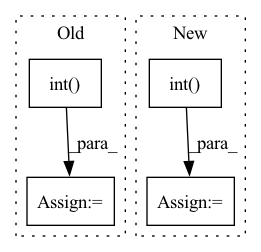

Pattern ID :13193
Before Change
// because there are 2**b = 2**6 quantization levels total
float2apot = 64 * torch.rand(size)
quantizer = APoTQuantizer(6, 2, 1.0, False)
float2apot = float2apot.int()
orig_input = torch.clone(float2apot)
dequantized_result = quantizer.dequantize(float2apot)
After Change
quantization_levels=qparams[2],
level_indices=qparams[3])
result = final_apot.data.int()
self.assertTrue(torch.equal(original_input, result))
def test_q_apot_alpha(self):In pattern: SUPERPATTERN
Frequency: 4
Non-data size: 4
Instances Fragment ID: 44578041
Project Name: pytorch/pytorch
Commit Name: 777c12f2dfd1bddbf7f04245833e3a0320bab41b
Time: 2022-06-27
Author: amandaliu@fb.com
File Name: test/quantization/core/experimental/test_quantizer.py
M Class Name: TestQuantizer
N Class Name: TestQuantizer
M Method Name: test_dequantize_quantize_rand_b6(1)
N Method Name: test_dequantize_quantize_rand_b6(1)
M Parent Class: unittest.TestCase
N Parent Class: unittest.TestCase
M File Name: test/quantization/core/experimental/test_quantizer.py
N File Name: test/quantization/core/experimental/test_quantizer.py
M Start Line: 118
M End Line: 129
N Start Line: 148
N End Line: 185
Before Change
num_pos = min(num_pos, (reg_overlap > 0).sum())
pos_mask = torch.topk(reg_overlap, num_pos, largest=True)[1]
reg_overlap[pos_mask] += 3.0
num_pos = max(1, torch.topk(pred_classif, topk, largest=True)[0].sum().int() )
num_pos = min(num_pos, (pred_classif > 0).sum())
pos_mask = torch.topk(pred_classif, num_pos, largest=True)[1]
pred_classif[pos_mask] += 3.0
After Change
).clamp_(max=1)
qualities[qualities != qualities.max(dim=0, keepdim=True)[0]] = 0.0
for quality in qualities:
num_pos = max(1, torch.topk(quality, topk, largest=True)[0].sum().int() )
num_pos = min(num_pos, (quality > 0).sum())
pos_mask = torch.topk(quality, num_pos, largest=True)[1]
quality[pos_mask] += 3.0 Fragment ID: 44578027
Project Name: zhanghengdev/mutualguide
Commit Name: e34b6b0002f1571fad0fa9bf00707f377f5fc431
Time: 2022-07-01
Author: zhanghengdev@outlook.com
File Name: utils/box/box_utils.py
M Class Name: AnonimousClass
N Class Name: AnonimousClass
M Method Name: mutual_match(12)
N Method Name: mutual_match(12)
M Parent Class:
N Parent Class:
M File Name: utils/box/box_utils.py
N File Name: utils/box/box_utils.py
M Start Line: 79
M End Line: 99
N Start Line: 97
N End Line: 118
Before Change
// because there are 2**b = 2**4 quantization levels total
float2apot = 16 * torch.rand(size)
quantizer = APoTQuantizer(4, 2, 1.0, False)
float2apot = float2apot.int()
orig_input = torch.clone(float2apot)
dequantized_result = quantizer.dequantize(float2apot)
After Change
quantization_levels=qparams[2],
level_indices=qparams[3])
result = final_apot.data.int()
self.assertTrue(torch.equal(original_input, result))
r Tests dequantize_apot result on random 1-dim tensor Fragment ID: 44578049
Project Name: pytorch/pytorch
Commit Name: 777c12f2dfd1bddbf7f04245833e3a0320bab41b
Time: 2022-06-27
Author: amandaliu@fb.com
File Name: test/quantization/core/experimental/test_quantizer.py
M Class Name: TestQuantizer
N Class Name: TestQuantizer
M Method Name: test_dequantize_quantize_rand_b4(1)
N Method Name: test_dequantize_quantize_rand_b4(1)
M Parent Class: unittest.TestCase
N Parent Class: unittest.TestCase
M File Name: test/quantization/core/experimental/test_quantizer.py
N File Name: test/quantization/core/experimental/test_quantizer.py
M Start Line: 90
M End Line: 101
N Start Line: 99
N End Line: 136